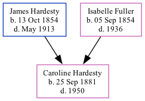

Caroline Calla Hardesty 1881 - 1950
[ Home ] | [ Surnames Index ] | [ Family History ]The child of James Hardesty and Isabelle Fuller, was born in Minneapolis Ottawa Co KS on Sep 25, 18811,2.
During her life, she was living in Douglas, Douglas, Nebraska in 19001 and in 19102 (the same place as her parents had been living in 1900).
She died in 1950.
Parents
- James Franklin was born on Oct 13, 1854
- Isabelle M was born on Sep 5, 1854
Citations
- 1900 United States Federal Census Ancestry.com Operations Inc (Age: 19; Marital Status: Single; Relation to Head of House: Daughter)
- 1910 United States Federal Census Ancestry.com Operations Inc (Age in 1910: 28; Marital Status: Single; Relation to Head of House: Daughter)
Family Tree
Data (GEDCOM) maintained by Jay Weston Hannah, Omaha, Nebraska, USA.
Website generated by ged2site. Last updated on Jun 18, 2024.